Curve command
Use the Curve command  to draw a smooth, B-spline curve by points. You can click and drag to define a freehand
curve, or you can click to create edit points to define the curve. If you click edit
points, you must define at least three points to create the curve.
to draw a smooth, B-spline curve by points. You can click and drag to define a freehand
curve, or you can click to create edit points to define the curve. If you click edit
points, you must define at least three points to create the curve.
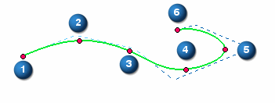
When you create a curve, edit points (1) and curve control vertex points (2) are created to help you edit and control the shape of the curve.

Closing curves
You can use the Closed option on the Curve command bar to create a continuous line that forms a closed curve connected tangentially at the first and last point you click.
|
Closed option |
Result |
|
Off
|
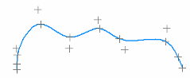 |
|
On
|
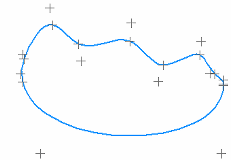 |
When editing a curve created from edit points, you also can use the Closed option to:
-
Close an open curve, without adding points.
-
Open a closed curve, without deleting points.
You cannot use this option to modify a freehand curve.
Displaying curves
You can use the options on the Curve command bar to control the display of a curve.
The Add/Remove Points button adds or removes edit points along the curve. When you add an edit point, the shape of the curve does not change. If the number of edit points on the curve is the same as the number of control vertex points, adding an edit point adds a corresponding control vertex point. The control vertex point moves to maintain the shape of the curve.
When you remove edit points, the control vertex points move, and the shape of the curve changes.
If there are only two edit points on the curve, you cannot remove an edit point from the curve.
See Insert or remove points on a curve.
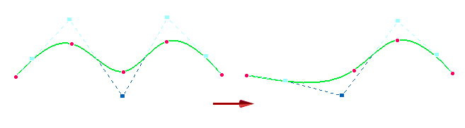
The Show Polygon button turns on the control polygon of the curve. This polygon displays when the curve is not selected.
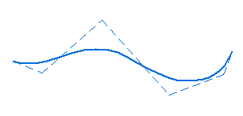
The edit points and control vertex points are handles that you can drag to change the shape of the curve.
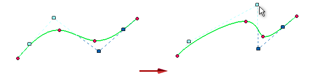
You can also use these points as keypoints for relationships and dimensions.
The Show Curvature Comb button displays the curvature comb for the curve. This helps you determine how quickly or gradually curves change and where they change direction.
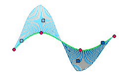
You can use the Curvature Comb Settings command to control the density and magnitude of the curve.
Editing curves
The Curve command bar controls how the shape of the curve changes when you make changes to the edit points and control vertex points.
The Shape Edit and Local Edit buttons control the shape of the curve when you move a point on the curve.
When you select the Shape Edit button, you affect the shape of the entire curve when you move a point on the curve.
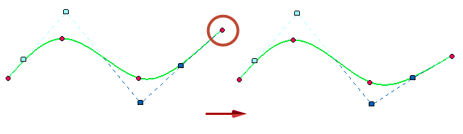
When you select the Local Edit button, you affect the shape of the curve around the edit point.
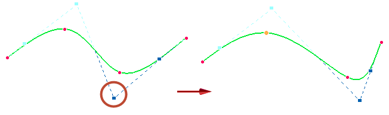
With Local Edit, if you drag a vertex point on an unconstrained curve, no other vertex points will move. However, if you drag a vertex point on a curve that has some relationships, then other vertex points may move as well. This allows the curve to adapt to the new location of the vertex point you moved while still maintaining the relationships.
You cannot drag an edit point that is fully constrained.
You can select the Curve Options button to display the Curve Options dialog box. You can use this dialog box to change the number of degrees for the curve and to specify the relationship mode for the curve. You can set the relationship mode to:
-
Flexible
-
Rigid
In Flexible mode you can use external relationships to control the shape of the curve. For example, you can apply a dimension relationship on the curve and as you make changes to the dimensions, the shape of the curve automatically updates.
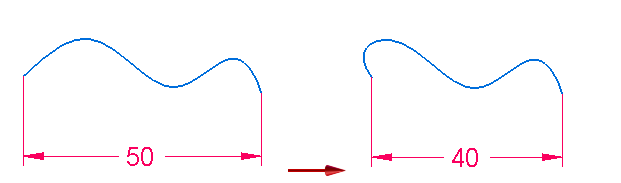
In Rigid mode you cannot use external relationships to control the shape of the curve. Instead, the curve shape remains unchanged and the curve simply rotates.
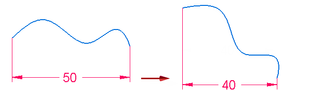
Dimensioning curves
When placing a smart dimension on a curve, the dimension result is measured as curve length (2) and is locked (1).
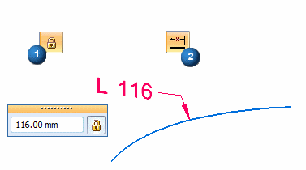
Simplifying curves
You can use the Simplify Curve command to simplify a polygon-based curve by reducing the number of edit points and control vertex points on a curve. The Simplify Curve dialog box increases or decreases a fit tolerance for the curve.
Simplifying a curve can cause the relationships placed on a curve to be deleted.
How do I
Draw a curveDisplay the control polygon for a curve
Insert or remove points on a curve
Simplify a curve
Convert analytic geometry to a b-spline curve
Draw a conic curve
Edit a conic curve
Look up more details
Curve command barCurve Options dialog box
Conic command
Conic command bar
Simplify Curve command
Simplify Curve dialog box
Convert To Curve command